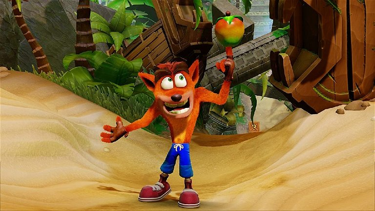

Bienvenido a Codo a Codo Gaming: Tu Destino para la Experiencia de Juegos en Streaming
Codo a Codo Gaming es más que una simple plataforma de streaming de videojuegos; es un santuario para los amantes de los videojuegos que desean experimentar lo mejor en rendimiento, calidad y comodidad. Al igual que el poderoso hardware de NVIDIA GeForce, Codo a Codo Gaming se ha comprometido a brindar una experiencia de juego inigualable a través de la transmisión en la nube.
TOP 1 DESCARGADO

"Age of Empires" es una icónica serie de videojuegos de estrategia en tiempo real que te sumerge en la historia, permitiéndote construir imperios, gestionar recursos, entrenar ejércitos y conquistar civilizaciones a lo largo de diferentes épocas. Es un juego desafiante que combina tácticas militares y desarrollo económico para crear una experiencia de juego profunda y emocionante.
TOP 2 DESCARGADO

Warzone es un juego de disparos multijugador que combina acción intensa, estrategia y supervivencia. Ambientado en un vasto mapa de guerra, los jugadores compiten en equipos o de forma individual para ser el último en pie, utilizando habilidades tácticas, armas y vehículos para alcanzar la victoria.
TOP 3 DESCARGADO
"Crash Bandicoot" es una saga clásica de videojuegos de plataformas que sigue las aventuras de Crash, un marsupial intrépido, y su lucha contra el malvado Dr. Neo Cortex. Con niveles coloridos, desafiantes obstáculos y personajes carismáticos, el juego ofrece una experiencia divertida y emocionante llena de acción, saltos y giros inesperados.
TOP 4 DESCARGADO

"Counter-Strike 1.6" es un juego de disparos en primera persona (FPS) que ha sido un pilar de la industria del gaming durante décadas. Los jugadores se dividen en equipos de terroristas y antiterroristas, compitiendo en emocionantes rondas de estrategia y habilidad. Con mapas variados, armas realistas y mecánicas de juego sólidas, Counter-Strike 1.6 ofrece una experiencia competitiva y adictiva que ha mantenido su popularidad a lo largo del tiempo.
Prueba nuestro nuevo sistema de rankings
Presentando un Avanzado Sistema de Ranking para Jugadores Sobresalientes en el emocionante universo de los videojuegos, ha surgido un sistema de ranking verdaderamente innovador que busca destacar a los jugadores más talentosos y comprometidos. Este sistema, respaldado por algoritmos de vanguardia, va más allá de evaluar simplemente la habilidad en el juego; considera también la deportividad, la interacción comunitaria y el impacto general que un jugador tiene en su entorno virtual. Lo que hace que este sistema sea tan excepcional es su enfoque holístico para determinar la excelencia en el juego. No se trata solo de quién tiene las mejores estadísticas, sino de reconocer a aquellos que encarnan los valores de juego limpio, colaboración y liderazgo entre sus pares. Este enfoque integral no solo fomenta una competencia saludable, sino que también fortalece los lazos dentro de la comunidad de jugadores. Al incentivar la participación en eventos comunitarios, torneos y actividades sociales dentro del juego, se crea un ambiente más unido y enriquecedor para todos los jugadores. Además, este sistema de ranking no se limita solo a otorgar reconocimiento virtual; también ofrece recompensas tangibles y oportunidades exclusivas para los jugadores mejor clasificados. Desde premios en efectivo hasta acceso a eventos especiales y patrocinios, se ofrece un estímulo adicional para que los jugadores sigan superándose y marcando la pauta en el mundo del juego. En resumen, este sistema de ranking representa un cambio significativo en la forma en que se valora y reconoce el talento en los videojuegos. Al considerar no solo la habilidad técnica, sino también los valores éticos y el compromiso con la comunidad, se establece un estándar de excelencia que inspira a todos los jugadores a alcanzar su máximo potencial y contribuir positivamente a la comunidad de juegos en línea.